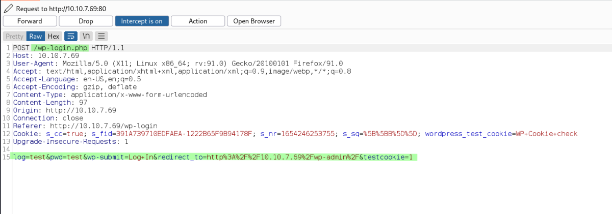

mr robot ctf
Mr Robot CTF
Machine IP: 10.10.108.225 10.10.7.69
We begin with nmap scan
We find port 80 & 443 Open & port 22 shown as closed (Might be partially open - Not needed for the write up)
We browse the website manually, it has various cool pages. But nothing intresting to give us access.
We then do an enumeration of directories with gobuster.
gobuster dir -u http://10.10.108.225 -w /usr/share/wordlists/dirbuster/directory-list-2.3-small.txt
Output:
We find 2 intresting files with (Status: 200).
/robots -------→ Instruction for webpage crawlers
/wp-login ------→ Wordpress Login

Accessing http://10.10.7.69/robots we get the above.
We get the first key and a dictionary file named fscocity.dic
http://10.10.7.69/key-1-of-3.txt
http://10.10.7.69/fsocity.dic
Next we open the other intresting page. wp-login
We will use hydra and dictionary file recieved to find out both username and password.
We capture the post request with burpsuite and collect the three important parameters.
1. Post Requester
2. Post Request
3. Error Message
We get 1 and 2 below

We get 3 below

Hydra Code for finding out Username:
hydra -L /home/cybex/lab/thm/MrRobotCTF/fsocity.dic -p test -s 80 10.10.7.69 http-post-form "/wp-login.php:log=^USER^&pwd=^PASS^&wp-submit=Log+In&redirect_to=http%3A%2F%2F10.10.7.69%2Fwp-admin%2F&testcookie=1:Invalid username" -vv -t 64

We found that Elliot is a valid username. This can be confirmed by using the above credentials in wordpress login. We will get a different error message.

keeping the 1 and 2 parameters same. We change the 3 parameter to the above error and following is the hydra code for password brute-force with Elliot as user.
Hydra Code for finding out Password:
hydra -l Elliot -P /home/cybex/lab/thm/MrRobotCTF/fsocity.dic -s 80 10.10.7.69 http-post-form "/wp-login.php:log=^USER^&pwd=^PASS^&wp-submit=Log+In&redirect_to=http%3A%2F%2F10.10.7.69%2Fwp-admin%2F&testcookie=1:The password you entered for the username" -vv -t 64

Thus, we get the wordpress credentials:
Username: Elliot
Password: ER28-0652
Note:
Alternative to Bruteforce, the page /license contains the username & password in its source code.
Next we login to wp-login page and gain foot hold by editing a non-default theme and live preview it, (So that it will load all the php files and in doing so our reverse shell php will also get executed.)
Note: 1) Choose a non-default theme so that we can live preview it.
2) Choose any php to replace with reverse shell code. (However, 404.php is more common for this purpose as its present in almost all themes and can be easily used.
See the following process:
Once we are at the dashboard.
Go to Appearance ---→ Themes

We notice that there are 3 themes.
We should ideally choose any non default theme. eg. Twenty Fourteen or Twenty Thirteen
Say We select Twenty Fourteen. Just keep the name in mind
and Go to Appearance ----→ Editor
In the editor select theme, in the upper right corner highlighted above.
Select previously discussed Twenty Fourteen

Then click on 404 Template. It will open the 404.php
Remove the enitire contents and replace with a php-reverse-shell
Then hit Update File at the bottom of the page to save it.
Now, open a netcat listner in our terminal.
To run the reverse shell payload.
Go back to Appearance ---→ Themes
Then hover the mouse on Twenty Fourteen and click on Live Preview
Note: if Live Preview doesn't work. Go to http://10.10.7.69/wp-admin/404.php?theme=twentyfourteen

By doing this we will get a shell in our netcat listener.
We got our initial foothold as user ‘daemon’
Changing to a system user

We have a MD5 Password for the user robot it seems. We copy it to a local hash file.
We crack it using john
john --format=Raw-MD5 --wordlist=/usr/share/wordlists/rockyou.txt john_hash_robot

Thus we find the password to be abcdefghijklmnopqrstuvwxyz
We stablize the terminal with python.
We use su to switch to user robot using the above passord.
Privilege Escalation

Once inside the user robot.
We read the 2nd flag file and then search for ways to do privilege escalation.
We find the setuid binaries. We find that nmap is allowed to run with SUID bit set.
We look at GTFObins to find a way to elevate this.
/usr/local/bin/nmap --interactive
!sh
Now, we can get the root flag from /root directory.
Thanks!!